console.log("what's up with the console?")
Almost all intro to javascript tutorials have you starting off with console.log("something").
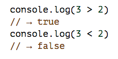
Eloquent Javascript, Codecademy, Codeschool, they usually begin with you writing a function that console.log's something. And why not? Console.log helps the user see output, which is essential for grasping the inner workings of a new concept.
The problem I have is that tutorials explain what functions are, explain what primitives are, explain what data structures are, explain every part of the script except console.log. Eventually console.log just becomes this magical thing that outputs numbers and the beginner programmers use without thinking about what it is actually doing.
"console" is actually an object that gives you access to the browser and let's you interact with it. Just like window is a global object, console is also a global object. Here is the console api reference from mozilla and here is the one from google
Go ahead and open your console browser by pressing command+option+j if you are using a mac. Now type in console. If you look under _ proto _ of the console and then the _ proto _ of the console base you can see all the methods console has.
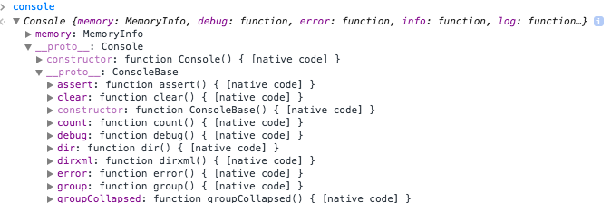
The three main uses of the browser console are:
1. A place to get diagnostic information about the website by having the app console.log information. This is great for debugging.
2. A command line prompt to interact with the DOM. This is great for doing front-end work as you do not have to go back between your app and your browser to see if certain jquery selections work.
3. A general sandbox to play with javascript. Rather than having to run a whole script to test if a function works you can run it in the console.
Here are some of the most popular console methods:
console.log - outputs a message to the browser console
console.dir - A more powerful console.log. log prints out a tree with information about its contents some of the time, the other time it prints out a string of its contents. dir always gives a tree with all the information about its contents.
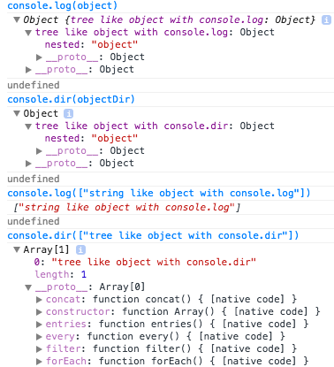
The downside is that dir prints out a json like object as opposed to a html like object.
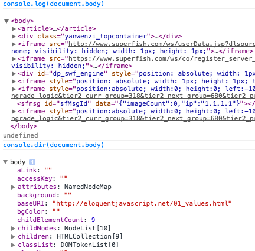
console.assert - Test assertions in your code that print to the console if they fail. Great for testing. console.assert(test, "error message").
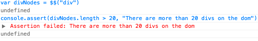
console.clear() - Clears console.
console.time and console.timeEnd - These act as a timer to keep track on how long it takes something to run. Put console.time("message") in front of a function and then after the function put console.timeEnd("message"). It prints out in the console how long it took your script to run what was inbetween the timers.
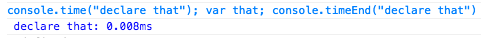
console.trace - prints a stack trace from where in the script console.trace() is called.
To see examples of console methods and to get a better understanding I feel that google has the best documentation. Here is a link
Here are somee shortcuts for interacting with the dom:
$() - Like jquery put a css selector within $(".class") to select it.
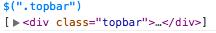
Sometimes google's command line api will fail to load.
If this happens you have to use the old school way of selecting things with document.querySelector.
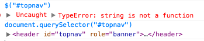
$$() - Selects all elements with the css selector. It would just look like $$(".class")
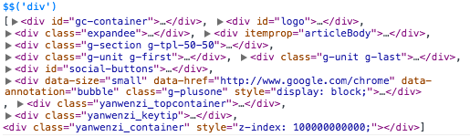
$0 - If you click an html tag in the elements tab, and then put $0 in your console, $0 will select the latest image you clicked.
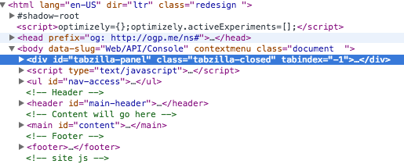
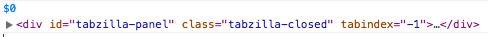
console.log trick - When you console.log an object in your code, right click it in the console, select store as global object, and now you can reference it in your console without having to console.log it. Great for if you are lazy and do not want to use the debugger to find the exact right context. You can now test things out on the object as if you were in the right context.
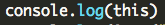
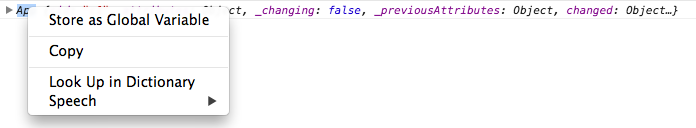
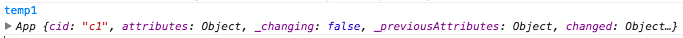
Like before, google has the best documentation for using these.
Bonus:
css + console.log - By using %c you can add css to your console.logs. It would look something like this console.log('%cHere is my Message', 'color: red;')
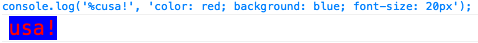
Tables in css - There is a console.table method. Put your table within a hash like json. console.table({1: {"header" : "contents"}})
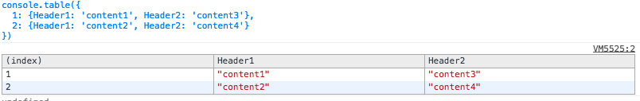